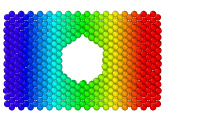
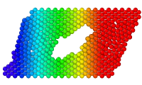
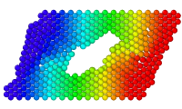

| Table of Contents | Freeze property | Up |
|---|---|---|
| Prev | Modifiers | Next |
| Table of Contents | Freeze property | Up |
|---|---|---|
| Prev | Modifiers | Next |
This modifier copies the instantaneous values of a particle property from a specified animation time to all other times. This basically fixes or freezes the property values. The Freeze Property modifier is useful in situations where varying information from different timesteps of a simulation shall be put in relation to each other.
The modifier operates as follows: The per-particle values of the selected input property are retrieved at the selected time (frame 0 of the loaded animation by default). These values are then written back to the selected output property, which may or may not be the same as the input property. This will happen for all frames of the current animation. Thus, it will be appear as if the values of the output property remain at the same constant values the input property had at the selected animation time. The modifier can be used to "freeze" particle property values that, otherwise, would be changing with simulation time.
If the input and output properties are not the same, the modifier performs a copy operation of the property values. However, keep in mind that it doesn't do so on an ordinary frame-by-frame basis: It rather copies the values of the input property sampled at a particular point in time across the temporal domain. If you want to simply copy a particle property on a frame-by-frame basis, you can use the Compute Property modifier instead.
The Freeze Property modifier can be used for various purposes, which will be illustrated with the help of the following examples. In general it provides a way to make per-particle information available at an animation time where it wouldn't be available otherwise.
| Initial frame: | Without Freeze Property modifier: | With Freeze Property modifier: |
|

|

|

|
The first picture shows the initial frame of a simulation sequence. The Color coding modifier was used here to color particles according to their X coordinates. During the course of the simulation, the particles move as a shear deformation is applied (second picture). Due to this motion, the particle colors are automatically updated by OVITO's pipeline system, because the Color coding dynamically recomputes the colors on every simulation frame on the basis of the current particle coordinates.
Sometimes this type of dynamic recalculation is not desired. Instead, we would like particles to keep their initial colors
that were assigned to them by the Color coding modifier at frame 0.
The Freeze property modifier allows us to suppress the dynamic updating by resetting the
the Color property to the values it had at the initial frame. In other words, the modifier lets us
"bake in" the values of a dynamically computed particle property such that it becomes static and no longer changes with simulation time.
The modifier is useful for comparing a per-particle property that changes over time with its initial
value at the beginning of a simulation. Let's suppose, for instance, we want to compute the difference by which
each particle's potential energy changes during the course of a simulation.
For this example, let's assume that the varying potential energy of each particle, as computed by the simulation code at each timestep,
has been loaded from the simulation data file and is available as a particle property named Potential Energy.
We can use the Freeze property modifier to take a snapshot of the initial particle energies at frame 0
by selecting Potential Energy as the source property. In this case we do not want to overwrite the current
values with the initial ones, because we are going to compute the difference between the two.
That is why we set the output property parameter to the user-defined property name Initial Energy.
This will let the modifier put the stored energy values to a new property and preserve the current values
of the Potential Energy property.
Finally, we can use the Compute Property modifier to compute
the difference between the particle property Potential Energy (which is time-dependent) and the newly generated property Initial Energy
(which remain static, thanks to the Freeze property modifier).
Another typical application for this modifier is described in this tutorial.